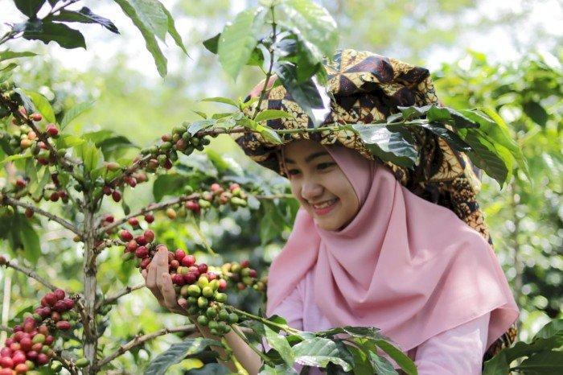

Sejarah Kami
"Berawal dari dataran tinggi Ngada di kaki Gunung Berapi Inerie, Flores, Kopi Bajawa tumbuh dari tradisi panjang masyarakat lokal. Ditanam secara organik pada ketinggian 1.500 mdpl, kopi ini mewarisi kehangatan tanah vulkanik Flores. Setiap biji yang kami sajikan membawa warisan turun-temurun, menghadirkan aroma tembakau yang khas dan rasa manis seimbang yang telah diakui dunia.
Visi
"Menjadi brand kopi lokal yang dikenal secara nasional dan internasional dengan tetap menjaga kualitas dan kesejahteraan petani lokal."
Misi
- Menyediakan kopi arabika premium berkualitas tinggi.
- Bekerja sama langsung dengan petani lokal.
- Menjaga cita rasa asli kopi Bajawa.
- Mendukung pertanian berkelanjutan.

